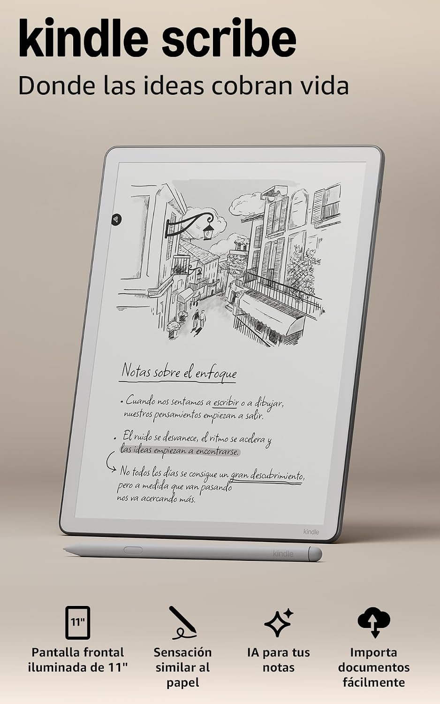

Amazon Kindle Scribe (última generación), 11", 32 GB
Un lector y cuaderno digital de 11 pulgadas y 32 GB, con pantalla que la ficha describe como similar al papel, texturizada y sin reflejos, y con luz frontal de brillo automático y calidez ajustable. Incluye un lápiz prémium que, según la ficha, no necesita carga. También declara un cuaderno integrado con herramientas de IA (buscar, preguntar sobre las notas, resumir o dar estilo), importación desde Google Drive y Microsoft OneDrive, exportación a OneNote y la función Active Canvas para anotar sobre documentos y libros. No hemos probado esas herramientas. La autonomía, según la ficha, es de semanas de lectura y escritura con una carga. Lo vende y envía Amazon. Entrega anunciada el miércoles 18 de noviembre. Valoraciones: 4,5 sobre 5, a partir de 184 opiniones.
519,00 €Amazon.es · vendido y enviado por Amazon · entrega anunciada el miércoles 18 de noviembre · en stock
11", 32 GB, lápiz prémium incluido que no necesita carga, según la ficha. Cuaderno con herramientas de IA declaradas. Autonomía de semanas, según el fabricante.